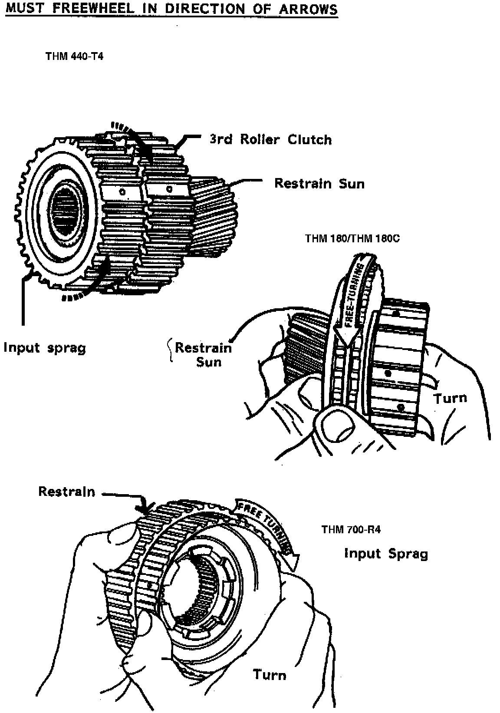
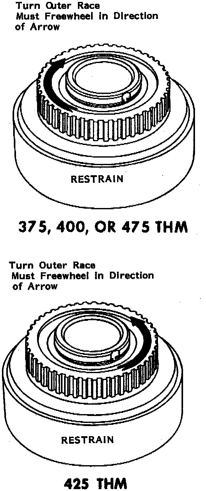
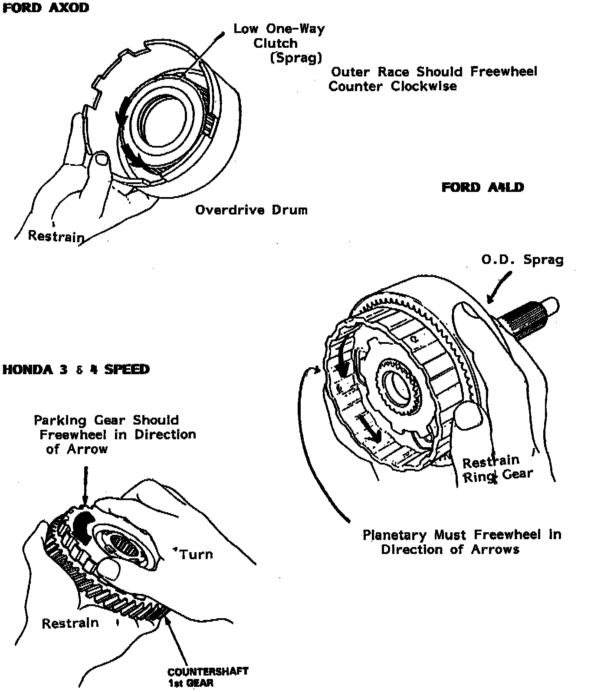
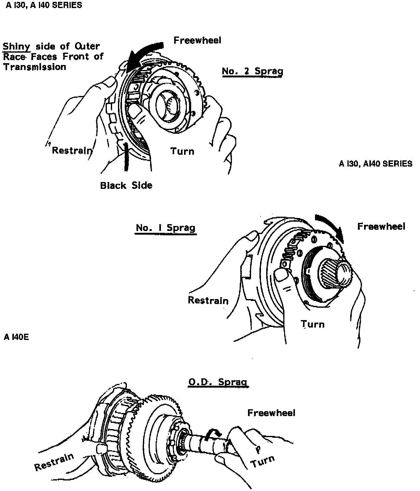
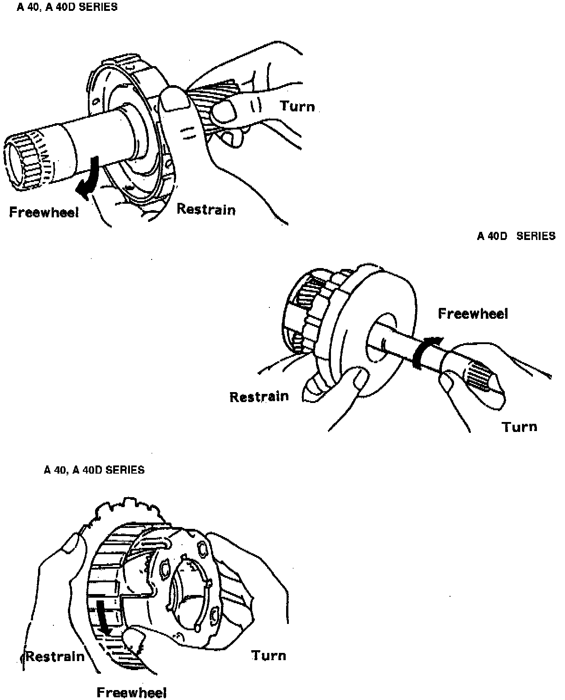

A/T - Sprag Rotation
TSB 88-34 (July)SUBJECT: SPRAG ROTATION
GM, FORD, HONDA, TOYOTA
Many sprags have been installed incorrectly because the manual may be difficult to understand.
The following figures should be easy to understand for a number of reasons:
1. An arrow indicates direction of freewheeling
2. "Restrain" indicates component should be held stationary.
3. "Turn" indicates the component should be attempted to turn in both directions. That component will lock one direction and freewheel the other.
Two "RULES OF THUMB" are true when it comes to sprag rotation.
1. Sprags that hold a given planetary gear (Sun, ring, or planetary carrier) stationary to the case will freewheel in third gear.
That means the planetary gear must freewheel in engine rotation.
2. A sprag located in an overdrive section must lock when the input shaft is turned in engine rotation, so torque can be transferred to the other section of the transmission.

GENERAL MOTORS
(THM 440-T4, THM 180/THM 180C, THM 700-R4)

(375, 400, OR 475 THM)

FORD/HONDA
(AXOD, A4LD, HONDA 3 & 4 SPEED)
A-SERIES

(A130, A140, A140E)

(A40, A40D)